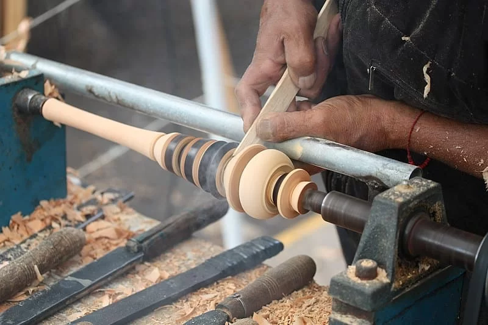

En esta página veremos diferentes herramientas y métodos que se utilizan en la carpintería.

En la carpintería, hay 7 herramientas imprescindibles para trabajar con madera.
Estas son:
- El torno de madera.
- Cepillo de carpintero.
- Sierras y serruchos de marquetería.
- Amoladora.
- Cinceles, gubias y cuchillos para madera.
- La cinta métrica.
- El lápiz de carpintero.
Torno de madera:
Se trata de una herramienta o máquina con la que se trabaja la madera mediante el cual se mecanizan las piezas gracias a una herramienta de corte.
Tras usarlo obtendremos virutas. En los tornos para madera lo importante es la potencia de corte, no la rotación de la máquina.
Cepillo de carpintero:

Los cepillos de carpintería se utilizan para el cepillado o rectificado de tirantes o listones de maderas, para emparejar o rebajar superficies de madera.
Se compone de una parte principal que es el cuerpo sólido, en cuyo interior se encuentra alojada la cuchilla.
Amoladora:

Sirve para cortar madera cuando se utilizan discos de corte de sierra o discos de corte madera
los cuales poseen dientes espaciados de tal manera que penetran en la madera cortando la fibra sin generar calor excesivo.